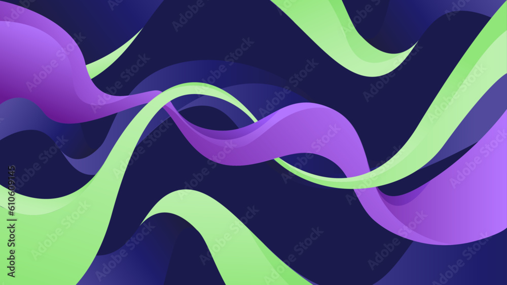

소중한 당신의 웹을 보안 취약점들로부터 지켜내세요.
수많은 취약점들에 해당하는 대응법과 다양한 자료와 도구들의 제공을 통해
안전한 웹에서 하고 싶은 것을 마음껏 펼쳐보세요.
더 시큐랩 과 함께라면 걱정하실 필요없습니다.
개요
OWASP Top 10에 명시된 취약점들을 기반으로 작성된
보안 체크리스트 홈페이지를 제작하고,
체크리스트 목록을 기반으로 웹 개발자들이 개발한
사이트의 취약점을 파악하고 진단 방법,
대응 방안을 최대한 자세하게 카테고리 별로 묶어 제시하여
웹 보안에 대한 이해와 인식을 높이는 데에
큰 도움을 기여하는 홈페이지 제작
목적
보안 체크리스트 홈페이지를 작성하여 웹 사이트의 취약점을 파악하고 대응 방안을 제시함
홈페이지의 체크리스트를 통해 웹 개발자는 자신이 개발한 웹 사이트의 보안 상태를 점검 하고, 대응 방안을 제공받는 데에 사용함
웹 개발자들은 보안에 대한 이해와 인식을 높이고, 보안 전문가들은 웹 사이트의 취약점을 검증하고 보완하는 데에 도움이 되는 정보들을 수집할 수 있음
웹 사이트의 신뢰성과 안정성을 높이고, 보안 위협에 대응할 수 있는 능력을 키우는 데에 기여할 수 있음
웹 사이트는 많은 정보와 데이터를 다루기 때문에 보안 위협에 노출될 가능성이 매우 높음또한 웹 애플리케이션 보안은 매우 중요한 이슈 중 하나로 인식되고 있음 이에 대한 이해와 적극적인 대응은 웹 사이트의 개발에 있어 신뢰성과 안정성을 보장하는 데에 필수적인 요소 OWASP Top 10은 웹 어플리케이션에서 가장 많이 발생하는 취약점들을 정리한 목록으로, 3,4년에 한번씩 업데이트되어 최신 보안 이슈를 반영하고, 이 목록은 웹 개발자나 보안 전문가들이 보다 안전한 웹 사이트를 구축하고 운영할 수 있도록 도움이 되는 정보들을 제공함
최신 트렌드를 반영한 웹 취약점 탐지 및 대응 강화 보안 커뮤니티 형성을 통한 보안 지식, 최신 보안 이슈를 공유하고 협력 보안 업데이트 및 정책 시행을 강화하여 웹 사이트 보안을 지속 유지 개발자들의 자체적인 웹 사이트 보안 점검 수행 보안 체크리스트를 기반으로 한 보안 컨설팅 및 서비스 제공
